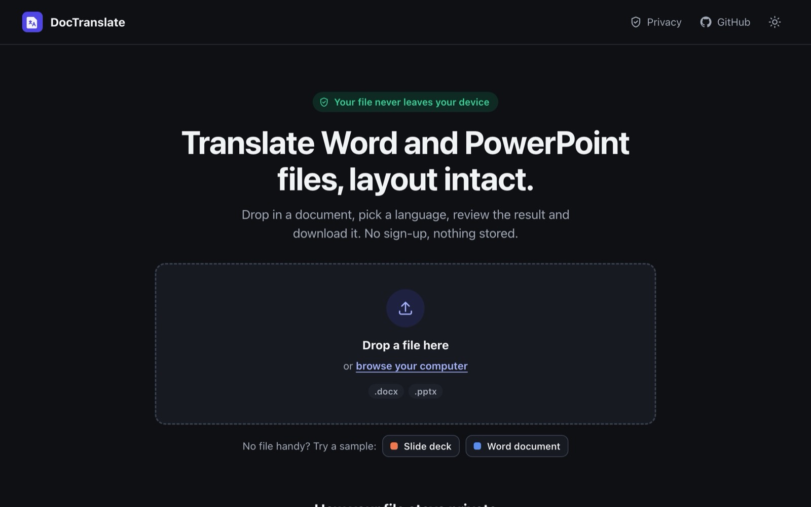
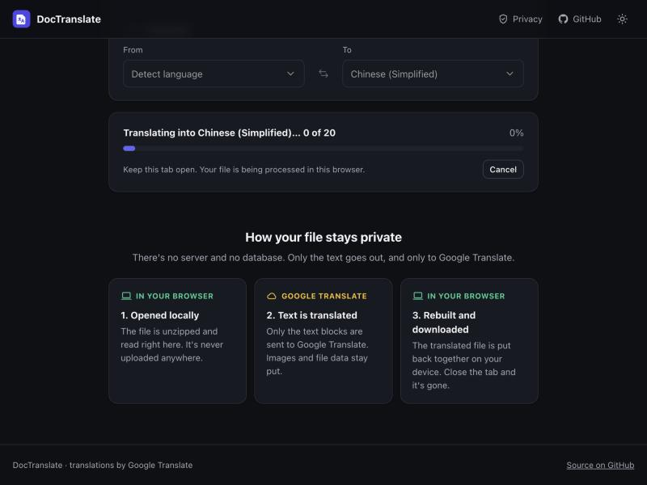
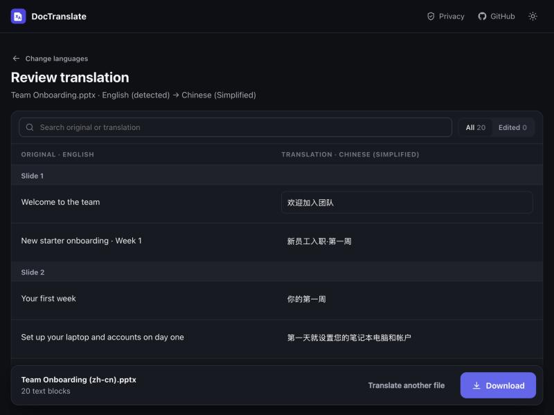

Why it exists
Not my job, but a problem I couldn't ignore
At Hegen my main job was leading the rollout of a learning platform for franchise and licensing partners. Separately, the company's international distributors, including those in China and Taiwan, needed company documents in their own language.
My colleagues were translating those Word files and slide decks by hand. The documents were confidential, so nobody was comfortable pasting them into AI tools. It was slow, repetitive work, and it wasn't my task, but I could see that a small tool would help.
Process
Three versions, each one easier to use
-
Colab notebooksAt Hegen
- What
- Python scripts for Word and PowerPoint, starting with Chinese for the distributors
- Problem
- Confidential files had to be uploaded to the cloud, and colleagues had to learn to run code
-
Windows appAt Hegen
- What
- The scripts packaged as a desktop app colleagues could download and run on their own laptops
- Result
- Colleagues working on the translation project used it, and it worked
- Problem
- Mac users couldn't run it, it was a 124 MB download, and the interface was clunky
-
Web appOct 2026, after the internship
- What
- A rebuild that runs in any browser, on any computer, with the file never leaving the device
- Why
- Looking back, I wanted it to look better and work for everyone, including Mac users
The first version was a set of Colab notebooks. Every run started by uploading the document to Google's servers, the step I most wanted to remove:
# Colab notebook, Word version !pip install python-docx googletrans==4.0.0-rc1 -q from google.colab import files from googletrans import Translator SOURCE_LANG = "en" # fixed to English uploaded = files.upload() # the confidential file goes to the cloud
Packaging it as a Windows app solved both problems for most of the team: the file stayed on their laptop, and there was nothing to install or run. Looking back at it as a designer, though, the interface made people work around it:
- You had to pick "Word or PowerPoint" from a menu before choosing the file, though the file name already said which
- A list of about 100 languages with no search
- Errors only appeared in pop-ups after you clicked
- A bare progress bar, with no count and no way to cancel
- Behind the scenes, formatting was wiped and each run overwrote the last file
The rebuild
How I'd do it now
After the internship I kept thinking about how I could have done it better. With AI coding tools like Claude Code, I could finally rebuild it the way I'd want to use it: in the browser, so it works on any computer, with a proper interface. Moving to the web raised a hard question first.
Would you upload a confidential document to a stranger's website?
So the rule I designed around was: no server, no database, no uploads. The page opens the file inside your browser, sends only the text to Google Translate, the same service every earlier version used, and puts the translated document back together on your computer. The app explains this on its first screen, including the part that does go to Google.

New in the web app
Check the translation before you download
Machine translation makes mistakes. In testing, "a line break" came back in Japanese as a rest break. The old app saved the file straight away, so nobody had a chance to catch that. The web app adds a review step:

- Original and translation side by side, grouped by slide or section
- Every line is editable, with an "Edited" badge and Undo
- Text that repeats is edited once and updated everywhere, so terms stay consistent
- Anything that couldn't be translated is highlighted instead of failing silently
Before and after
Windows app vs web app
| Windows app | Web app | |
|---|---|---|
| Who can use it | Windows only, 124 MB download | Any browser, about 110 KB |
| Choosing a file | Pick the type, then the file | Drag and drop, type detected |
| Languages | Long list, source fixed to English | Search, suggestions, auto-detect |
| Mistakes | Pop-up after clicking | Inline hint before you click |
| Progress | Bare bar | "29 of 48", with Cancel |
| Quality check | None | Review and edit every line |
| Formatting | Reset to defaults | Font, size, bold and colour kept |
What I left out, and why
- Translating text inside images. It would add several megabytes for every visitor, and the translated text couldn't go back into the image anyway.
- Accounts and history. Saving history needs a database, which breaks the no-uploads rule.
What I learned
The first version is a start, not the answer
The Windows app did its job, and colleagues used it. But going back to it later showed me how much of the work it left to the user. Each version reached more people because I asked who still couldn't use it and why. And being clear about where data goes earns more trust than a vague promise that it's "secure".
“An eagerness to take on responsibilities beyond the typical scope of an intern.”